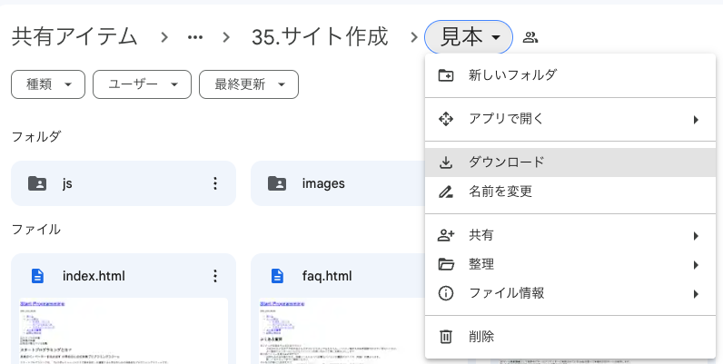
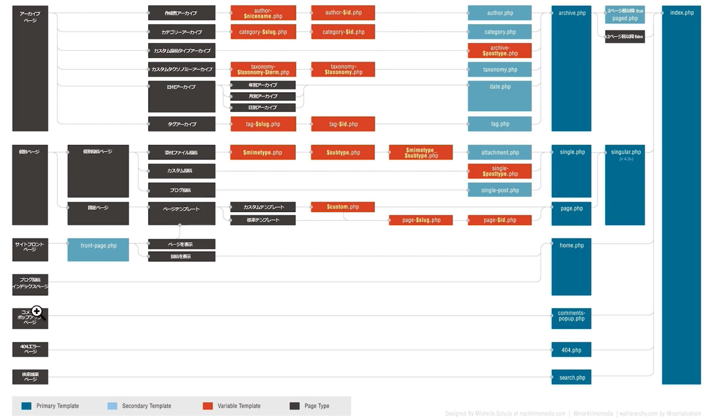
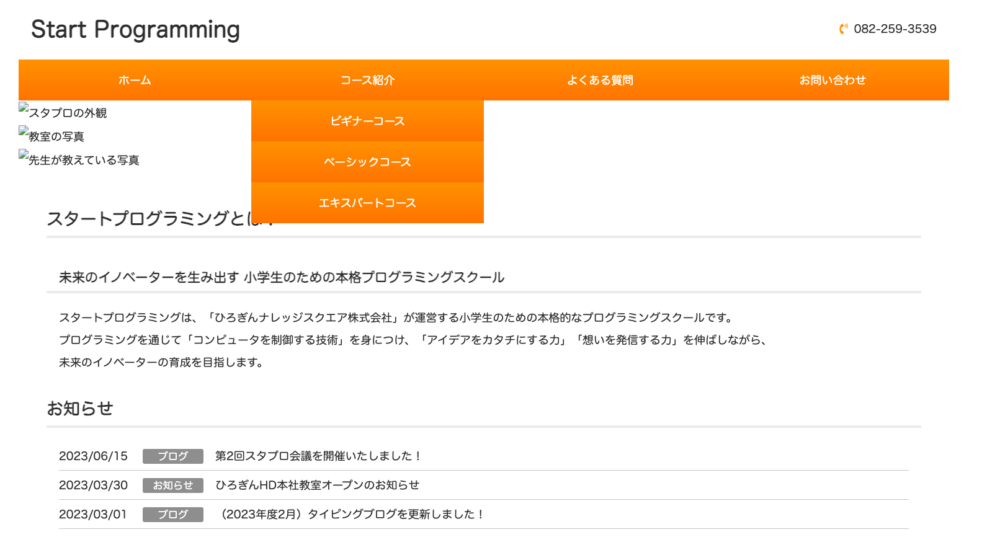

前回までの学習では、既存のテーマの修正などを行ってきました。
次はいよいよ、オリジナルテーマ（自分で一から作るテーマ）の作成や修正を行っていきましょう！
今回はHTML&CSSコースで使用した「スタプロサイト」を使っていきます！
下記リンクから、「見本」と書かれているものをダウンロードしてください。

ダウンロードが出来たら、動画のように「見本」の中にある「index.html」というファイルの名前を「index.php」に変更しましょう！
変更の理由として、「index.php」という名前のファイルが存在しないと、ワードプレスでオリジナルテーマを作成することができないためです。
また、「style.css」というファイルも存在しないとテーマを作ることが出来ないので、合わせて覚えておきましょう。
phpファイルの中にはHTMLも記述することができるため、ファイル名を変えても「index.html」の中に記述されたものはそのまま読み込むことができます。
ワードプレスには「テンプレート階層」という概念があり、そのルールに従って読み込むファイルなどを指定する必要があります。
ワードプレスを学習する上で必ず理解しておかないといけない箇所になるので、しっかり理解を深めましょう！

ここまで出来たら、実際にワードプレスで「スタプロサイト」を読み込んでみましょう！
動画のように階層を辿っていき、「themes」というフォルダの中に使いたいフォルダを入れることで、そのサイトを読み込むことが出来ます。
フォルダを入れた後は、管理画面からそのテーマを有効化する必要があるので覚えておきましょう！
これで、オリジナルテーマの読み込みができました！
しかし、今はcssが効いていない状態になります。cssを効かせるためには、phpでコードを書き直す必要があります。
index.phpの9行目(cssを読み込ませる箇所)に以下のコードを書くことで、cssを正しく読み込むことができます。
<!-- 9行目 -->
<link rel="stylesheet" href="<?php echo esc_url(get_theme_file_uri('css/style.css'));?>" >
phpでコードを書く際には、<? phpという書き方で始まり、 ? >という書き方で閉じなければなりません。その中にプログラムを書いていきます。
「echo」は取得してきた情報を表示させるために必要なものになります。
「esc_url」はセキュリティ対策として必要なものになります（書く必要があるんだなーくらいの認識で大丈夫です）
「get_theme_file_uri」というのは関数で、現在表示されているテーマ（今はスタプロサイト）の絶対パスを取得してくる関数です。
パスについてわからない場合はこちらを参考にしてください
絶対パスと相対パスについて
あとはいつものように、cssというフォルダの中の「style.css」を読み込ませるために「css/style.css」と書きます。
これでワードプレスでcssを読み込ませることが出来るので、コードが書けたらブラウザをリロードして確認してみましょう！

画像のようになっていれば、上手くcssが読み込めています！
画像やJavaScriptの読み込み方法も、基本的には先程のcssの読み込ませ方法と同じになります。
トップページの画像、及びJavaScriptを読み込ませるコードを書いていきましょう！
<!-- 42行目 -->
<div><img src="<?php echo esc_url(get_theme_file_uri('images/stapro.jpg'));?>" alt="スタプロの外観"></div>
<!-- 43行目 -->
<div><img src="<?php echo esc_url(get_theme_file_uri('images/school.jpg'));?>" alt="教室の写真"></div>
<!-- 44行目 -->
<div><img src="<?php echo esc_url(get_theme_file_uri('images/teacher.jpg'));?>" alt="先生が教えている写真"></div>
<!-- 113行目 -->
<script src="<?php echo esc_url(get_theme_file_uri('js/slick.js'));?>"></script>
<!-- 116行目 -->
<script src="<?php echo esc_url(get_theme_file_uri('js/main.js'));?>"></script>
下の動画のように、画像が上手く表示され、JavaScriptが機能していれば成功です！
HTML前半コースで作成した「動物と猫のサイト（練習問題）」をワードプレスで読み込み、 cssと画像を読み込ませてみましょう！
下記リンクから「練習問題」をダウンロードして使ってください。